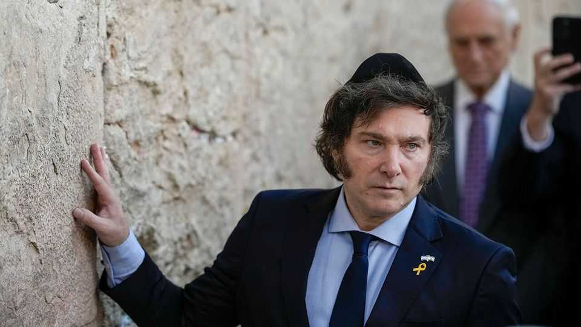

Latin America is embracing Israel
New right-wing leaders are rushing to upgrade ties

Oct 22nd 2026
“Something remarkable is happening in Latin America”, grinned Binyamin Netanyahu, Israel’s embattled prime minister, on October 14th. “It’s all coming back! The great friendship.” He was speaking following the opening of Colombia’s new embassy in Jerusalem. Colombia has become the fourth—and so far the most populous—Latin American country to recognise the holy city as Israel’s capital. It is unlikely to be the last.
Israel has grown more isolated as a result of the war in Gaza. Yet conservative leaders in Latin America—many of them newly elected—are dramatically stepping up ties. Javier Milei, Argentina’s president, is the keenest. Earlier this year he told The Economist he thought Mr Netanyahu was a “superstar”. He himself has claimed, oddly, to be the “most Zionist president in the world”. In April Mr Milei announced the “Isaac Accords”, a vague framework for closer engagement between Israel and the region. A new direct flight between Buenos Aires and Tel Aviv launches next month.
Flávio Bolsonaro, the frontrunner in Brazil’s presidential election, has vowed to relocate his country’s embassy from Tel Aviv to Jerusalem if he wins on October 25th. He expressed his “full support” for Israeli settlers during a recent visit to the West Bank; both he and Mr Milei have prayed before the Western Wall. As well as moving its embassy, Colombia in August became the only country other than the United States to say it supported Israel’s claim to the Golan Heights. “We have never paid so much attention to our relationship with Israel,” says Sandra Borda of the University of the Andes in Bogotá.
Rodrigo Paz in Bolivia, José Antonio Kast in Chile and Nasry Asfura in Honduras have all bolstered diplomatic ties that their predecessors had downgraded in response to the bloodshed in Gaza. Delcy Rodríguez, the interim president of Venezuela, has softened the chavista regime’s longstanding hostility towards Israel. After big earthquakes near Caracas in June she accepted Israel’s offer to send rescue teams and resumed consular ties. “Latin America is becoming a blue continent,” says Marcos Peckel of the Confederation of Jewish Communities in Colombia, referring to Israel’s blue-and-white flag.
Some of the region’s leaders are motivated by strong personal convictions. Mr Milei is known to study the Torah with a rabbi. When The Economist visited his office in August, a Hebrew text sat on his desk. In a speech to Israel’s parliament in 2025, he vowed to “defend Western culture”. Yet political calculations are plainly central, too. Moving closer to Israel is one way for the new right in Latin America to curry favour with America’s Republican Party, and with Donald Trump.
The political costs are relatively low, says Christopher Sabatini of Chatham House, a think-tank in London. A survey by Pew, a pollster, finds that a little over half of Argentines, Brazilians, Colombians and Peruvians have an unfavourable view of Israel—much lower than the 69% reported in Britain and 78% in Spain. In most of Latin America, questions related to Israel and Palestine matter far less to voters than fighting crime and boosting the economy.
The region also has a swift-growing constituency that encourages outspoken support for Israel: evangelical Christians. Many believe the Jewish return to Israel fulfils biblical prophecy. Born-again Christians have been effective in getting right-wing leaders into power. Before Colombia’s election evangelical voters held prayer vigils for Abelardo de la Espriella, the eventual winner, who was once an atheist but is now a fervent Catholic. Evangelicals also mobilised behind Mr Bolsonaro in the first round of Brazil’s election.
Many of the region’s leaders took office promising to take a tough line on drug gangs. Governments are counting on weapons and advice from Israel to give their plans a boost. In 2022 Ecuador, which has a murder rate three times the Latin American average, said it would spend around $65m buying Israeli armoured vehicles. The violence in Ecuador has its roots in neighbouring Colombia, where Mr de la Espriella has recently been bombing armed groups. But the armed forces need Israeli intelligence and drone technology to act effectively, says General Alberto José Mejía, who led Colombia’s military services in 2015-18.
In 2024 Gustavo Petro, the president at the time, severed ties with Israel and halted purchases of arms and other equipment that Colombia’s army had long relied on. The country’s weapons stocks were depleted, says General Mejía. Colombia’s various rebel groups now rally more than 28,000 fighters, almost double the figure when Mr Petro took office in 2022. “The Israeli defence complex will have a field day with this government,” says a Colombian intelligence expert.
Will the love-in with Israel endure? America’s midterms, in November, are relevant. If Republicans come out wounded, leaders in Latin America may grow a bit less inclined to follow Mr Trump’s lead. In Chile, a friendlier policy towards Israel has prompted a backlash (it has a large Palestinian community). Supporters of Colombia’s formerly pro-Palestinian policies are also aghast. Israel’s own election, on October 27th, adds uncertainty. But for now, at least, Latin America and Israel are enjoying their tightest bond in years. ■